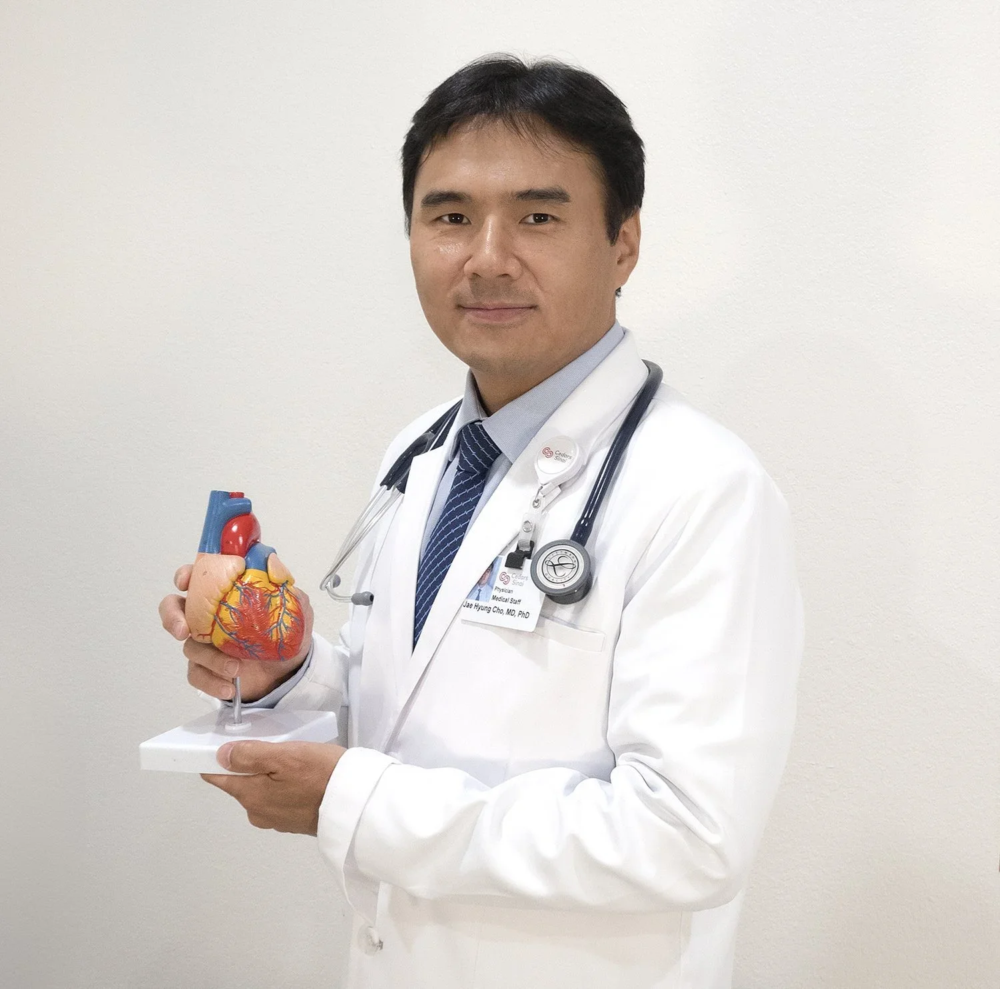

고혈압Hypertension
혈압의 정확한 평가와 생활습관 교정, 약물 치료를 통해 심뇌혈관 합병증 예방을 돕습니다.
Cardiology · Koreatown, Los Angeles
조재형 심장내과는 정확한 진단과 근거 중심의 치료를 제공합니다.
시더스 사이나이 메디컬 센터에서 수련하고 진료하는 심장내과 전문의가 직접 진료합니다.

진료 분야
혈압의 정확한 평가와 생활습관 교정, 약물 치료를 통해 심뇌혈관 합병증 예방을 돕습니다.
콜레스테롤 수치와 심혈관 위험도를 종합 평가하여 맞춤형 치료 목표를 설정합니다.
가슴 통증 및 압박감의 원인을 정밀 검사로 확인하고, 관상동맥 질환의 조기 진단에 힘씁니다.
심근경색 이후의 회복과 재발 방지를 위한 약물 관리 및 지속적인 추적 진료를 제공합니다.
숨참, 부종, 피로감 등 증상을 관리하고 최신 가이드라인에 따른 치료로 삶의 질 향상을 돕습니다.
부정맥 전공 박사로서 심방세동, 두근거림, 실신 등 심장 리듬 이상을 전문적으로 진료합니다.
가족력, 당뇨, 흡연 등 위험 요인을 평가하고 심장 질환을 미리 예방하는 건강 관리를 돕습니다.
상담 예약하기 →심장 내과 검사
심초음파 인증(NBE)을 받은 심장내과 전문의가 직접 검사 결과를 판독하고, 필요한 경우 관상동맥 CT · 심장 MRI 등 고급 영상 검사까지 안내해 드립니다.
심장의 구조, 판막, 펌프 기능을 초음파로 실시간 확인합니다.
운동 중 심전도와 혈압 변화를 관찰하여 관상동맥 질환을 평가합니다.
경동맥 및 말초혈관의 협착이나 혈류 이상을 확인합니다.
관상동맥의 협착과 석회화를 비침습적으로 정밀하게 촬영합니다.
심근의 상태와 기능을 고해상도 영상으로 평가합니다.
영상칼럼
오시는 길
| 월요일 – 금요일 |
|---|
| 오전 8:30 – 오후 5:30 |
가슴 통증, 두근거림, 숨참, 고혈압이 있으시다면 미루지 말고 진료를 받아보세요.